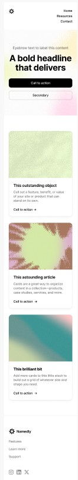
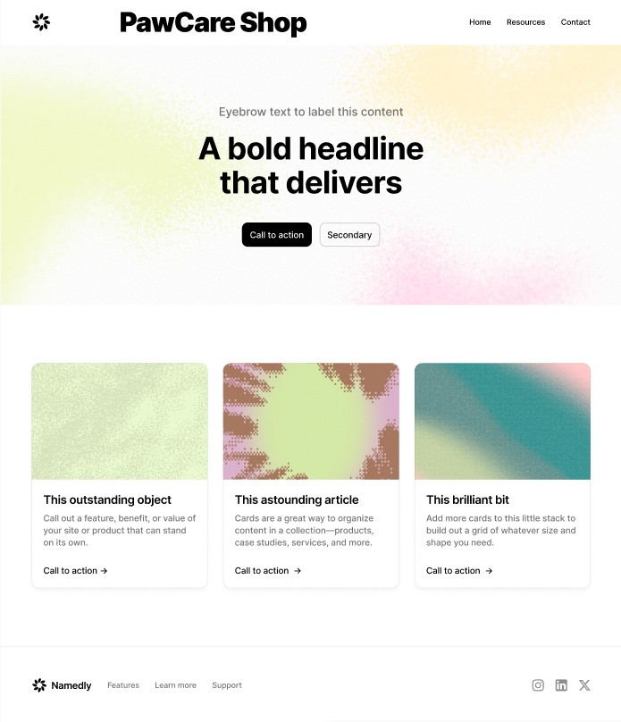

1. Site Name
PawCare Shop
The name "PawCare Shop" was selected because it combines the idea of pet care with a friendly and emotional connection through the word "paw," making it appealing and easy to remember for pet owners.
Domain: pawcareshop.pe
2. Site Purpose
The purpose of this website is to provide an online platform where pet owners can browse and learn about products for pet care, including food, toys, and accessories. The site will also offer helpful information and allow users to contact the business or submit inquiries. The website will be able to display products, show detailed information in a modal window, and manage user interactions such as saving selections.
3. Scenarios
- What type of food is best for my dog or cat based on their age and size?
- Where can I find detailed information about a product before buying it?
- How can I contact the shop to ask questions about pet care or product availability?
4. Color Schema
#2C7BE5 - Used for headings, navigation bar, and primary buttons.
#F4A261 - Used for accents, call-to-action buttons, and highlights.
#F8F9FA - Used for page background and content sections.
5. Typography
Poppins - Used for headings (h1, h2).
Lato - Used for the general site content.
6. Wireframe

